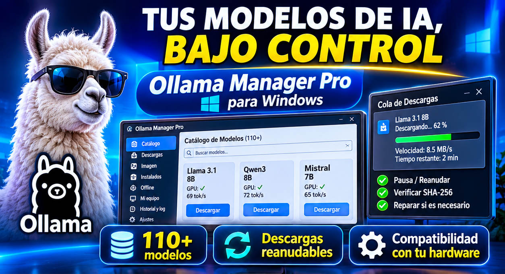
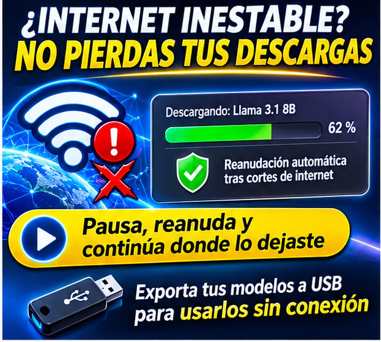
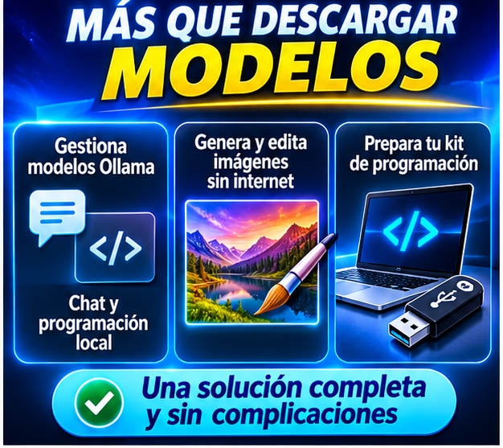

Descarga, gestiona y usa modelos de inteligencia artificial en tu PC con Windows. Si se va la luz o se cae internet, la descarga continúa donde se quedó. Después, todo funciona sin conexión.
Un solo archivo .bat · Sin instalación · Windows 10 y 11


Los modelos de IA pesan varios gigas. Con una conexión que se corta, descargarlos es una pesadilla… salvo con Ollama Manager Pro.
Todo lo que necesitas para trabajar con IA local, desde una sola ventana.
Chat, código, visión, OCR, razonamiento, embeddings y traducción. Cada modelo explica para qué sirve y en qué destaca.
Detecta tu CPU, RAM y GPU y te dice qué modelos caben, si van por GPU o CPU y su velocidad estimada.
Reanudación garantizada, verificación SHA-256 y cola persistente que continúa tras cerrar la app o un apagón.
Exporta modelos, el instalador de Ollama y la propia app a un USB. Impórtalos en cualquier PC sin conexión.
Crea imágenes desde texto o edita fotos con instrucciones, sin internet, también con GPUs AMD (Vulkan).
Prepara modelos de código y configura VS Code (Continue) para programar con IA totalmente offline.
Si no está en el catálogo, lo busca en ollama.com y Hugging Face y te deja añadirlo con un clic.
Comprueba la integridad de tus modelos, detecta versiones nuevas y vuelve a descargar solo lo dañado.
Cada operación queda registrada con fecha y resultado. El historial se abre directamente en Excel.

Prueba cada modelo en un chat integrado, adjunta imágenes a los modelos con visión y mide la velocidad real en tu equipo.
Baja Ollama-Manager-Pro.bat desde GitHub y guárdalo en una carpeta con espacio, por ejemplo D:\IA\.
La app detecta tu equipo. Si Windows muestra un aviso, pulsa Más información → Ejecutar de todas formas.
Busca un modelo, mira si es compatible con tu PC y pulsa Descargar. Del resto se encarga la app.
La app es gratuita para todos los usuarios. Se descarga desde GitHub, la plataforma donde se publica su código abierto.
Sí. Ollama Manager Pro es gratuita y de código abierto (licencia MIT). No pide registro, no tiene publicidad ni funciones de pago.
Sí. Solo necesitas internet para descargar los modelos. Después, probarlos, generar imágenes, programar o importar desde un USB funciona sin conexión.
No. La app guarda la cola y los archivos parciales. Al volver a abrirla, continúa sola desde el punto en que se quedó.
No. Muchos modelos funcionan solo con el procesador y la RAM. La app te indica, para tu equipo concreto, qué modelos caben y a qué velocidad aproximada.
Sí. Para las Radeon RX 5000 y 6000, la app detecta que hace falta Vulkan y te ofrece activarlo con un clic.
No: los modelos de visión entienden imágenes (las describen, leen texto en ellas). Para crear o editar imágenes está la pestaña Imagen de la app.
Depende de la licencia de cada modelo, que puedes revisar en ollama.com o en Hugging Face. La app es libre; cada modelo tiene sus propias condiciones.
El aviso aparece porque la app no tiene firma digital comercial. El código es abierto: cualquiera puede revisarlo en GitHub antes de ejecutarlo.